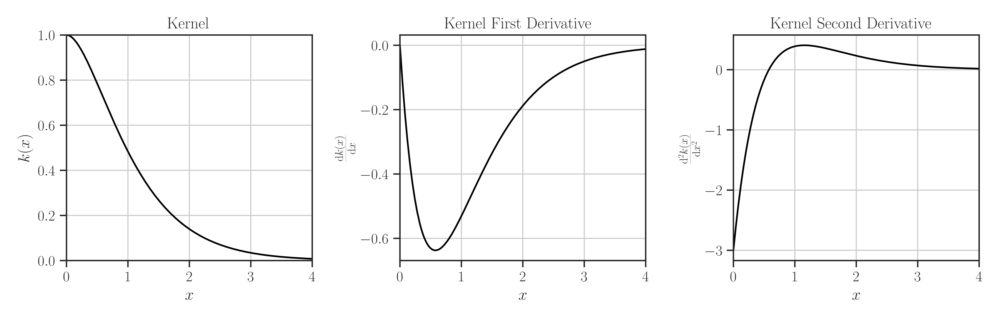

glearn.kernels.Matern#
- class glearn.kernels.Matern#
Matern kernel.
The kernel object is used as input argument to the instants of
glearn.Covarianceclass.Note
For the methods of this class, see the base class
glearn.kernels.Kernel.- Parameters:
- nufloat, default=0.5
The parameter \(\nu\) of the Matern function (see Notes below).
See also
Notes
Matern Kernel Function:
Matern correlation (set \(\nu\) by
nu) is defined as\[k(x | \nu) = \frac{2^{1-\nu}}{\Gamma(\nu)} \left( \sqrt{2 \nu} x \right)^{\nu} K_{\nu}\left( \sqrt{2 \nu} x \right),\]where \(K_{\nu}\) is the modified Bessel function of the second kind and \(\Gamma\) is the Gamma function. Both \(K_{\nu}\) and \(\Gamma\) are computed efficiently using the
special_functions.besselk()andspecial_functions.lngamma()functions.The Matern kernel for specific values of \(\nu\) has simplified representation:
The Matern kernel with \(\nu=\frac{1}{2}\) is equivalent to the exponential kernel, see
glearn.kernels.Exponential.\(\nu = \infty\) is equivalent to the square exponential kernel, see
glearn.kernels.SquareExponential. If \(\nu > 100\), it is assumed that \(\nu\) is infinity.If \(\nu = \frac{3}{2}\) the following expression of Matern kernel is used:
\[k(x | \textstyle{\frac{3}{2}}) = \left(1+ \sqrt{3} x \right) e^{-\sqrt{3} x}.\]If \(\nu = \frac{5}{2}\), the Matern kernel is computed with:
\[k(x | \textstyle{\frac{5}{2}}) = \left(1+ \sqrt{5} x + \frac{5}{3} x^2 \right) e^{-\sqrt{5} x}.\]
First Derivative:
The first derivative of the kernel is computed as follows:
\[\frac{\mathrm{d} k(x)}{\mathrm{d}x} = c z^{\nu - 1} \left( \nu K_{\nu}(z) + z K'_{\nu}(z) \right),\]where \(K'_{\nu}(z)\) is the first derivative of the modified Bessel function of the second kind with respect to \(z\), and
\[\begin{split}z = \begin{cases} \sqrt{2 \nu} \epsilon, & \vert x \vert < \epsilon, \\ \sqrt{2 \nu} x, & \vert x \vert \geq \epsilon, \end{cases}\end{split}\]and
\[c = \frac{2^{1-\nu}}{\Gamma(\nu)} \sqrt{2 \nu}.\]Second Derivative:
The second derivative of the kernel is computed as follows:
\[\frac{\mathrm{d} k(x)}{\mathrm{d}x} = c z^{\nu-2} \left( \nu (\nu-1) K_{\nu}(z) + 2 z K'_{\nu}(z) + z^2 K''_{\nu}(z) \right),\]where \(K''_{\nu}(z)\) is the second derivative of the modified Bessel function of the second kind with respect to \(z\).
Examples
Create Kernel Object:
>>> from glearn import kernels >>> # Create an exponential kernel >>> kernel = kernels.Matern(nu=1.5) >>> # Evaluate kernel at the point x=0.5 >>> x = 0.5 >>> kernel(x) 0.7848876539574506 >>> # Evaluate first derivative of kernel at the point x=0.5 >>> kernel(x, derivative=1) 0.6309300390811722 >>> # Evaluate second derivative of kernel at the point x=0.5 >>> kernel(x, derivative=2) 0.16905719445233686 >>> # Plot kernel and its first and second derivative >>> kernel.plot()
Where to Use Kernel Object:
Use the kernel object to define a covariance object:
>>> # Generate a set of sample points >>> from glearn.sample_data import generate_points >>> points = generate_points(num_points=50) >>> # Create covariance object of the points with the above kernel >>> from glearn import covariance >>> cov = glearn.Covariance(points, kernel=kernel)
{kind=link}